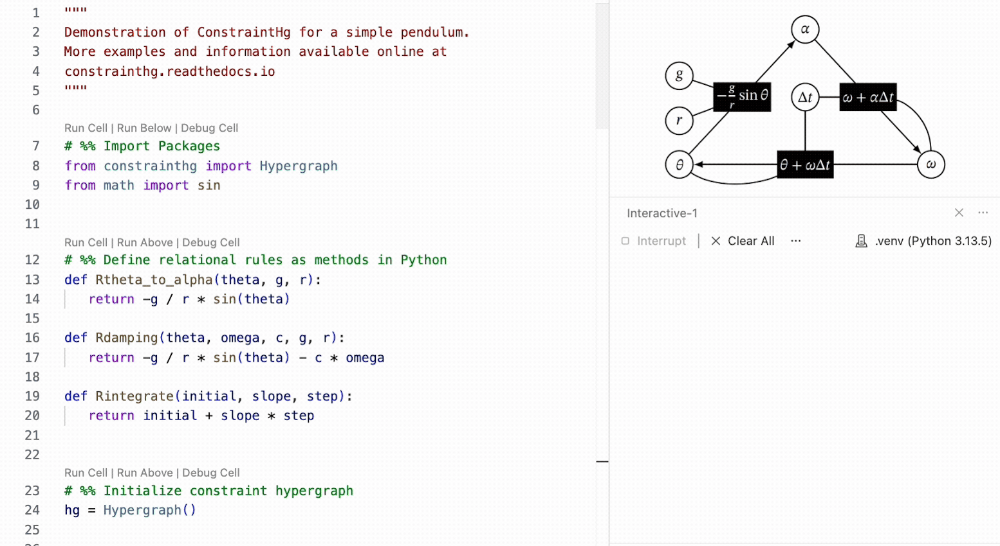
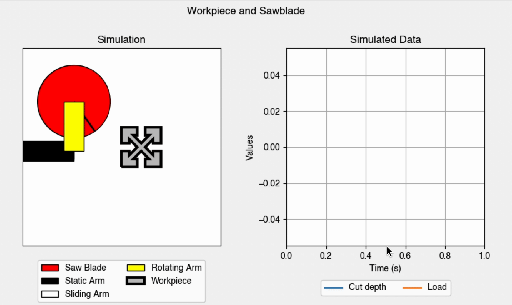
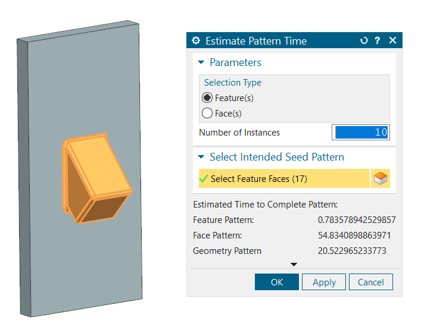
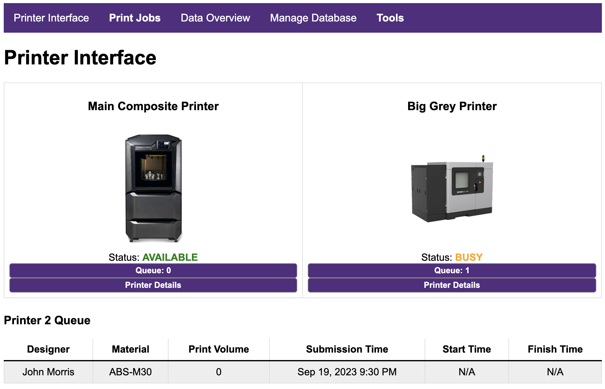
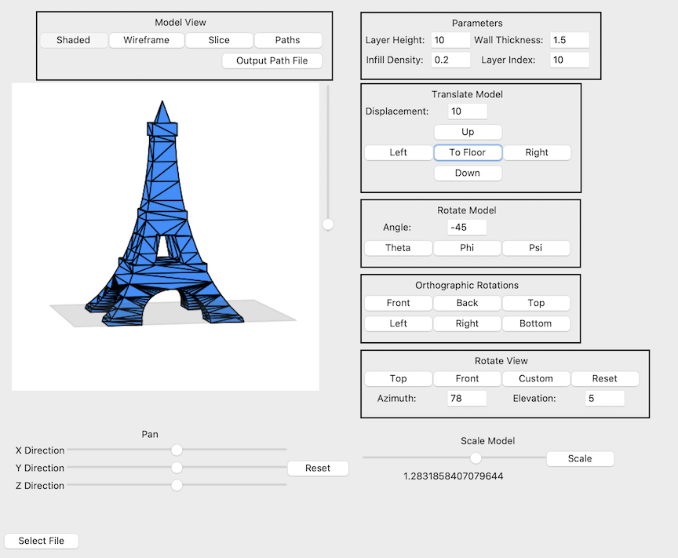
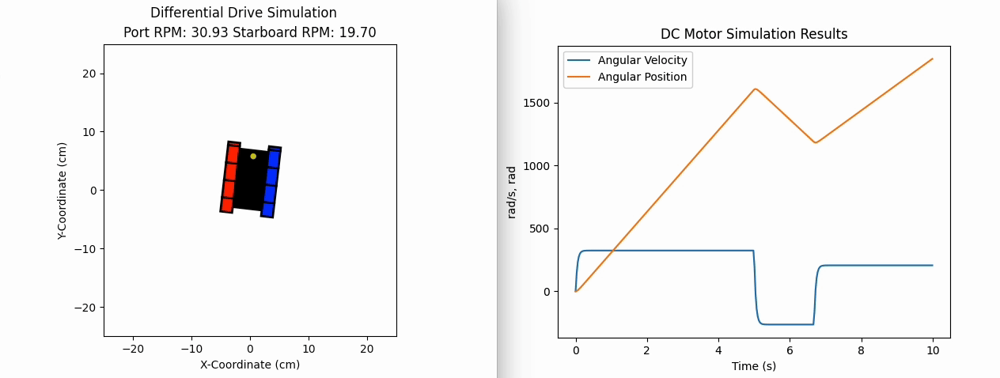
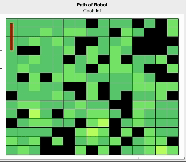
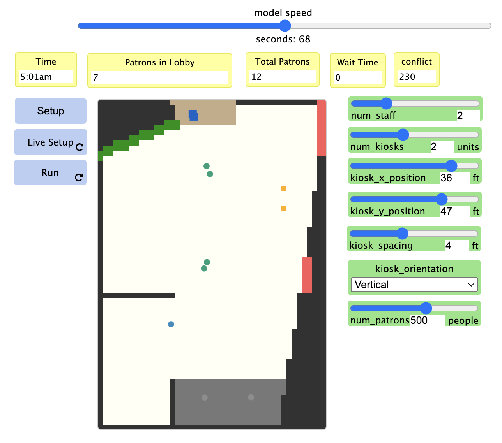

Past Projects
Systems Modeling Kernel Link
This Python package is used for traversing constraint hypergraphs, allowing systems to be simulated autonomously. The constraint hypergraph represents the system (and all models of it), and ConstraintHg provides pathfinding methods for transforming inputs to outputs. This allows a modeler to treat the model as a pure black box, able to transform any inputs to any desired output, facilitating an immediate interrogative approach to working with system representations. There's lots more information following the link.


Digital Twin of a Microgrid Link
The microgrid has been modeled by nearly a dozen modelers since 2016, many in connection with the US Navy and the Naval Postgraduate School (NPS). I used constraint hypergraphs to turn it into a declarative, functional model, integrating bits and pieces of models previously written in MATLAB, Python, and MS Excel. The result demonstrated ConstraintHg's ability to represent digital twins.

Digital Twin of a Chop Saw Link
This digital twin was eventually retired before being fully implemented, but as it stood it was a full-stack digital twin that took in sensor data from cameras, recorded the configuration of a chop saw using OpenCV modules in a MySQL database, which was accessed by a complex dynamic model that predicted the force input on the saw blade as it cut through a workpiece. This information was outputted to a dashboard hosted on a connected implemented in Dash (with Plotly). It combined both IoT, computer vision, dynamic modeling, and informatics into a single glorious project and directly led to our realization of constraint hypergraphs for representing the state space.

NX Journal for CAD Patterning Estimation Link
This was a two-night project to make a journal for Siemens NX that estimated the time for a patterning operation to be completed. The science was pretty basic (mostly linear extrapolation), but it was my first macro written in VBA and working with a CAD API is never easy, no matter what application you're working with. Our presentation at ASME IDETC even got some attention from Jon Hirschtick.

Digital Twin Informatics for Additive Manufacturing Link
Most of my work is with the modeling side of digital twins, but this project allowed me to see the data streams that also contribute to their efficacy. This project implemented a PHP server communicating with a MySQL db that attached to several mock representations of industrial additive manufacturing machines. Data from various sensors on the machines were processed and communicated via the web interface shown below.

STL Slicer Link
This was a semester project for graduate class in Design Automation taught by Dr. Cameron Turner. Though this Python package has some bugs (for instance, it uses hard-linking to drive the MatplotLib animations in the Tkinter interface, plus it's slow), it still features robust manipulation and slicing of STL objects including orthographic representations, snap to floor, scaling, wireframe/shaded views, slicing with wall thicknesses, and layer height cross sections.

Digital Twin of Tracked Vehicle Link
I led an undergraduate research group while getting my doctorate that was making a digital twin of a robotic, tracked vehicle. I made up this short simulation that tracked voltage inputs to the motors and outputted planar motion, torque, and other parameters. This digital twin was our first exposure to the truth that models are only as good as they are connected, and that all of our integrations were generally hard-wired rather than flexible.

Sensor Optimization for Robotic Pathfinding Link
A robust MATLAB module (with nice documentation) showing how the sensors on a robot can be optimized for a given environment. Implements a genetic algorithm that uses an A* pathfinding sequence to find a family of routes based on a given generation of sensors.

Agent-Based Model of Traffic Flow through Civic Center Link
This simulation was conducted in cooperation with the civic and recreation center in Provo, Utah, to help them understand traffic flow through their facility and espeically the front lobby space. It was used by the center in determining staffing effects and the potential of installing kiosks. This was coupled with a Discrete Event Simulation (DES) using the SimPy library. I'm still working on getting the code up on GitHub for that.
